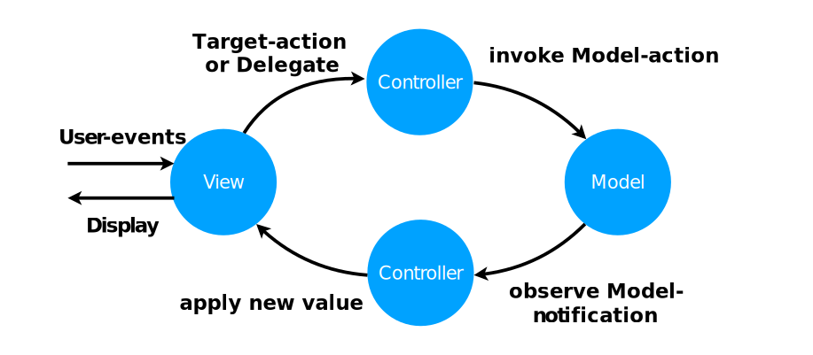

Model-View-Controller without the Controller
In the previous article, I presented a syntax for constructing views in a self-contained expression. The syntax comes from my upcoming CwlViews library, which I hope to release in a few weeks; but in the meantime, I wanted to take a look at the effect this syntax has on the application design pattern.
View construction syntax might seem like a trivial matter of aesthetics but an app built around the syntax I presented ends up with some dramatic changes: it makes all state changes naturally unidirectional and eliminates the controller role from the application design pattern. Given that controllers are probably the most prominent aspect of Cocoa app programming, their removal constitutes a substantial change.
Which raises the question: what do you have left if you remove the Controller from the Cocoa Model-View-Controller pattern?
Book announcement! I’m writing a book with two other amazing developers, Chris Eidhof and Florian Kugler from objc.io, titled App Architecture. It will cover a range of conventional and experimental application design patterns and architectural techniques – including the application design pattern described in this article. The book is available now in Early Access.
Background
I’ve previously described “ideal” Model-View-Controller as any implementation where model changes take the path shown in the following diagram:

Why do I consider this “ideal”? I explain the reasons in The worst possible application; a good application requires a cleanly separately model and view and a cleanly separated model must be passively observed (instead of “getting” data imperatively) to maintain its abstraction. Invoking actions and passively observing creates this feedback loop between the view and the model.
In View-state driven applications, I talked about the benefits of making view-state (not just document state) go through the loop in this diagram. Making view-state and document-state go through a loop like this is sometimes called “unidirectional data flow” since all data flows must go in the same direction (clockwise in this diagram). Outputs from any view (excluding “display”) must go all the way through to a model object and inputs to each view (excluding “user-events”) must come from model objects.
There are multiple frameworks for enforcing unidirectional data flow on other platforms – Elm, Flux, Redux, etc. These usually model their state as a “reducer”. I’ve previously talked about reducers – they’re functions that take message inputs, update state and emit notifications. Their key advantage is that they’re isolated; they can run in their own execution context, interacting with the rest of the program only via inputs and notifications. Common frameworks for unidirectional data flow tend use use a single change pipeline that invokes all reducers as part of a managed approach to changes.
My View-state driven pattern (MVC+ViewState) offered a more lightweight approach to unidirectional data flow – deliberately avoiding reliance on any larger framework or global pipeline. Instead, MVC+ViewState added a separate View-state model to the standard MVC pattern and pushed view-state through that model using the same techniques used for the regular model. However, manually maintaining a separate View-state model doubled the observation work and coordinating views dependent on state from both models were clear drawbacks.
A simple view controller in Cocoa MVC
I’ll come back to the ideas of view-state and unidirectional data flow but first, I want to discuss the role of view controller in a simple Cocoa Model-View-Controller application.
For this, I’ll look at the MVC (non-View-state) version of the “Clocks” app I presented a couple of months ago. The app has a “Select Timezone” screen that looks like this:
This screen is a basic table view showing plain text rows, backed by a view controller named SelectTimezoneViewController. The table view is populated by the standard UITableViewDataSource and UITableViewDelegate methods:
var rows = TimeZone.knownTimeZoneIdentifiers.sorted()
func numberOfSections(in tableView: UITableView) -> Int {
return 1
}
func tableView(_ tableView: UITableView, numberOfRowsInSection section: Int) -> Int {
return rows.count
}
func tableView(_ tableView: UITableView, cellForRowAt indexPath: IndexPath)
-> UITableViewCell {
let cell = tableView.dequeueReusableCell(withIdentifier: "textRow", for: indexPath)
cell.textLabel!.text = rows[indexPath.row]
return cell
}This is about as simple as UITableViewDataSource and UITableViewDelegate method implementations can get: a fixed single section is specified, the number of rows for the section comes from the rows array, a UITableViewCell with identifier "textRow" is constructed and the cell’s textLabel is configured with a value from the rows array.
The scene also includes a search field. In the storyboard for this scene, the delegate of the search field is set to the SelectTimezoneViewController and the following UISearchBarDelegate function is called when the search text changes:
func searchBar(_ searchBar: UISearchBar, textDidChange: String) {
let value = textDidChange.lowercased()
rows = TimeZone.knownTimeZoneIdentifiers.sorted().filter { str in
value.isEmpty || str.lowercased().range(of: value) != nil
}
tableView.reloadData()
}This recreates and filters the timezone identifiers, producing a new rows array and reloads the table data.
Finally, since the purpose of the scene is to select timezone identifiers and add timezones to the model, it’s necessary to handle row selection:
func tableView(_ tableView: UITableView, didSelectRowAt indexPath: IndexPath) {
if rows.indices.contains(indexPath.row) {
Document.shared.addTimezone(rows[indexPath.row])
}
presentingViewController?.dismiss(animated: true, completion: nil)
}When a row is selected, two separate actions occur:addTimezone is called on the Document and the entire “Select Timezone” modal presentation is dismissed.
All of the code I have shown for the “Select Timezone” scene is implemented on a single view controller. This is the standard Cocoa MVC approach for this type of scene.
Implementing the same code with CwlViews
I now want to look at how this same code would be implemented in CwlViews. The code will need to fulfill the same roles of:
- Define the section and row structure of the table view
- Construct cells from the row data
- When the search text changes, sort and filter the timezone identifiers and refresh the display
- When a row is selected, add the timezone to the document and dismiss the modal presentation.
Here’s the code:
func tableView(_ select: SelectState, _ split: SplitState, _ doc: DocumentAdapter)
-> TableView {
return TableView<String>(
.tableData -- select.search.map { text in
let value = text.lowercased()
return TimeZone.knownTimeZoneIdentifiers.sorted().filter { str in
value.isEmpty || str.lowercased().range(of: value) != nil
}.tableData()
},
.cellIdentifier -- { rowDescription in .textRowIdentifier },
.cellConstructor -- { cellIdentifier, rowData in
TableViewCell(.textLabel -- Label(.text -- rowData))
},
.didSelectRow -- Input().multicast(
Input().filterMap { .add($0.rowData!) }.bind(to: doc)
Input().map { _ in nil }.bind(to: split.select),
)
)
}There’s no view controller. This one code sample includes all the functionality of the previous three Swift code samples but the functionality is implemented by attaching behaviors directly to the table view, itself.
You can probably see the sorting and filtering of the knownTimeZoneIdentifiers in the middle of this example – it’s largely unchanged from before – but I’ll probably need to explain the remaining details.
Understanding what’s happening involves learning about the two key components of CwlViews: view-binders and model-adapters.
View-binders
This code uses the type names TableView<String>, TableViewCell and Label instead of UITableView, UITableViewCell or UILabel. These type names are the view-binders for their respective views.
View-binders in CwlViews are the constructors of underlying view objects. They fully describe the view through a series of “bindings” (either constant values, closures or reactive programming signals). You can call
instance()on the view-binder to force construction of the underlying view but in general, this will happen automatically when the view-binder is used by a parent so you don’t generally do it yourself.
The structure of the table – the sections and rows – are specified by applying the function .tableData() to the end of the sorted, filtered TimeZone.knownTimeZoneIdentifiers array transformation. This is a convenience function provided by CwlViews to turn an array into a TableData<RowData> structure that describes a single-section, static table view. In this case, the RowData is a String, since the rows are the string timezone identifiers. The same structure can describe mutable animatable table rows and sections but those features are not needed, here.
The .cellIdentifier and .cellConstructor closures together specify the same construction of the UITableViewCell that we performed in tableView(_:,cellForRowAt:) in the MVC version.
The .didSelectRow binding handles the same work as the tableView(_:,didSelectRowAt:) from the MVC version. Since this one binding needs to handle two actions (adding the timezone identifier to the model and dismissing the modal selection view controller), a multicast is used, which splits the single Input into two: an .add message sent to the doc (which will create the new timezone entry in the document) and a nil message sent to the split.select variable (the “Select Timezone” modal presentation is constructed from this view-state variable in the parent split view so setting the variable to nil implicitly clears the modal presentation).
Model-adapters
I want to talk a little about state. All mutable state in CwlView must be wrapped in what CwlViews calls model-adapters.
Model-adapters are a concept that CwlViews provides for handling the model-end of bindings. A model-adapter is any object that internally wraps and maintains a state value internally – using a reducer – and externally exposes reactive programming inputs and outputs.
Examples of model-adapters in the tableView construction example include the DocumentAdapter and the select.search and split.select properties. All properties and parameters in CwlViews are expected to be either immutable or wrapped in a model-adapter so the remaining parameters – the SelectState and SplitState objects which contain the search and select properties – are immutable model structs (technically, they are emitted from model-adapters higher up in the view-state hierarchy but that’s not relevant here).
This expectation that model-adapters must wrap all mutable state might seem restrictive but it turns out to be entirely pragmatic:
- the only possible mutations on a view-binder are through bindings
- bindings on a view-binder need to connect to other objects
- the other objects must expose a bindable interface to work with bindings
A model-adapter is any stateful object that exposes a bindable interface allowing it to be the “other object”.
The most important model-adapter to the “Select Timezone” scene is the select.search object that represents the contents of the search field. This property is referenced in the tableView construction code and is an example of the most common kind of model-adapter, the Var:
let search: Var<String>A Var is a model-adapter with “set” semantics – a basic setter where any value you send it replaces the existing value. You can see how this search property is “set” by looking at the construction of the SearchBar for the “Select Timezone” scene:
func searchBar(_ select: SelectState) -> SearchBarConstructor {
return SearchBar(
.text -- select.search,
.didChange -- select.search
)
}When the search bar changes, it emits a value through the .didChange binding and select.search is set. If select.search changes, it will emit a value through its output to the .text binding, updating the search bar (.didChange won’t be called if the value is unchanged, so this configuration won’t cause an infinite loop).
Feedback loops and unidirectional data flow
The search bar example shows the full view/model feedback loop that I diagrammed at the top of this article: SearchBar.didChange → SelectState.search (input) → SelectState.search (output) → SearchBar.text.
I mentioned briefly in the Background that having all view outputs go via the model and all view inputs come from the model is sometimes called “unidirectional data flow”. In Elm/Flux/Redux, this path is enforced by the framework. In the MVC+ViewState approach I presented in the Clocks app it was enforced through manual effort.
In CwlViews, all view-state is naturally handled on its own very simple, unidirectional view/model feedback loops. It’s an emergent effect of the syntax requiring neither framework enforcement nor significant vigilance.
Controller or bindings, does it matter?
So I made a dramatic statement in the introduction that this pattern eliminates the controller – but it doesn’t really eliminate the work, it just moves that work down into bindings on each view. It’s reasonable to ask: why does it matter if they’re implemented in bindings or if they’re implemented in methods on a controller?
The biggest reason why bindings are an improvement is that bindings don’t share state and they can’t depend on each other. Bindings can depend on their source-end but they can’t depend on anything else. Bindings avoid unwanted interdependence.
Using regular Cocoa view-controller subclasses without bindings, you can keep behaviors independent – if you’re disciplined – but there’s no syntax to enforce this or framework help to ensure it, so dependencies and other interference creep in. Non-trivial controllers are typically filled with shared state, manually propagated dependencies and expectations of sequentiality between different actions. In many cases, the size of larger view controllers is enough to create visual interference between behaviors.
Interference between behaviors in view controllers causes code complexity to grow in a greater-than-linear way per new behavior. Along with the significant over-assignment of responsibilities to a small number of view controllers in Cocoa MVC, this leads to the problem jokingly called “Massive-View-Controller” (using the same “MVC” acronym) where Cocoa view controllers are overloaded with behaviors and each new behavior is increasingly fragile, slowing development and requiring continuous refactoring.
Scalability, view-models and testing
Most MVC alternatives attempt to address controller complexity issues by adding separate roles to the application design pattern that split the controller into multiple smaller objects. CwlViews does almost the opposite – it eliminates the controller and throws everything into a single large expression.
At first glance, this might seem ridiculous; how is a single expression more scalable than an entire class? Or cluster of classes?
The truth is that the CwlViews approach isn’t about forcing everything into a single expression. The point about declarative expressions like CwlViews’ construction is that it is easily decomposable. You can build your view-binders however you choose and break functionality out into its own function as it grows.
In fact, the tableView and searchBar functions I’ve already shown are themselves broken out of the construction of the overall scene because I think it looks better to keep the construction of components separate from the layout of those components:
return ViewController(
.view -- View(
.backgroundColor -- .barTint,
.layout -- .vertical(
.view(navBar(split)),
.view(searchBar(select)),
.view(length: .fillRemaining,
tableView(select, split, doc)
)
)
)
)This code sample does reveal something else: the
ViewControlleris not totally gone in CwlViews.ViewControllers are still used for their role in swapping in and out sections of the view-tree. However, they don’t have many other responsibilities. Notice that the only binding used here for theViewControlleris to specify its child.view.
It’s not just child views that you can easily move out of the construction syntax to their own locations. Imagine that you decided the .tableData binding transformation that I showed previously during the TableView construction:
.tableData -- select.search.map { text in
let value = text.lowercased()
TimeZone.knownTimeZoneIdentifiers.sorted().filter { str in
value.isEmpty || str.lowercased().range(of: value) != nil
}.tableData()
},was growing too large.
The decomposeable nature of CwlViews’ declarative syntax means that it is trivial to pull this code out and put it somewhere else. The most natural place to move a transformation like this is into a var or func on the structs whose properties the transformation processes.
For example, you could move this transformation into a var on the SelectState struct where the search property resides:
var tableData: Signal<TableData<String>> {
return search.map { text in
let value = text.lowercased()
TimeZone.knownTimeZoneIdentifiers.sorted().filter { str in
value.isEmpty || str.lowercased().range(of: value) != nil
}.tableData()
}
}With this property in-place, the code at the binding location is reduced to:
.tableData -- select.tableDataWhen you add this type of transformation to a view-state struct, the effect starts to get very similar to a presentation model, also known as view-model (a representation of state from the model, combined with partial state from the view that encodes the presentation and interaction logic of the view). You can also move these transformations to the main document adapter. In that scenario, these transformations start to look like use-cases (specialized slices of the model as needed by views within the app).
By lifting transformation logic out of the view-binder and up into the model layer, you can make specialized versions that further transform more general versions so that the appropriate level of abstraction and transformation is provided and the whole architecture scales as needed.
The question is: should all transformations be lifted out to form a complete presentation-model in all cases? The Model-View-ViewModel pattern suggests this approach because the presentation-model can be used as a testable interface for testing the logic and state of the entire view.
While you could do this in CwlViews if you wanted, the reality is that a manually created presentation-model isn’t necessary for testing because the view-binder already makes it possible to access the presentation and interaction logic.
For example, if we wanted to test that the correct .cellIdentifier binding was used in the table view returned from our tableView construction function, we could write the following test:
func testTableViewCellIdentifier() {
// Create the inputs
let select = SelectState()
let split = SplitState()
let doc = DocumentAdapter(document: Document())
// Call our tableView function to create the view-binder then extract the bindings
let bindings = tableView(select, split, doc).consumeBindings()
// Select the binding we want
var function: ((TableRowDescription<String>) -> String?)? = nil
for b in bindings {
if case .cellIdentifier(let f) = b {
function = f
break
}
}
// Test the result
let result = function?(TableRowDescription(indexPath: IndexPath(), rowData: nil))
XCTAssert(result == "textRow")
}I should probably build some helper functions to simplify this type of scenrio a little but the premise is clear: you can ask a view-binder for its bindings and test them in the same way that you would test the observable properties of a view-model.
What’s the result?
Getting back to the initial question I posed: what do you have left if you remove the Controller from the Cocoa Model-View-Controller pattern?
Taken literally, the simplest name would be Model-View – and it wouldn’t be wrong since everything except the bindings in this approach is either a model-layer object or a view-layer object. But I have spent too many years writing in MFC’s Document-View, which sounds a lot like Model-View and whose defining aspect is that the whole program is coordinated from the window’s message queue. I hardly want to court comparison with that.
With “bindings” forming such a significant part of this pattern – largely replacing the Controller from Model-View-Controller – it would be natural to describe this pattern as Model-View-Bindings but unfortunately, Model-View-Binder is already a synonym for Model-View-ViewModel on some platforms. Probably better to avoid confusion.
Ultimately, since I’ve taken to describing the pattern with the following diagram:
I’ve been calling the pattern ModelAdapter-ViewBinder (MAVB).
Yeah, it’s a bit of a word-salad but I persuaded my co-authors Application Architecture to let me put this crazy idea into the book (because I’ve been having so much fun with it), so I figured I should give it a name.
View the code
You can view the original MVC version of the “SelectTimezoneViewController.swift” file on the undoredo branch of the Clocks repository on github. It’s received some touch-ups since I released the code in November but most of the project is unchanged.
You can also view the CwlViews version of the “SelectView.swift” file on the cwlviews branch of the Clocks repository on github.
The CwlViews version is a complete project, showing much more of CwlViews than I’ve revealed here. It also fully implements user-interface time-travel, like the View-state driven “master” branch.
But at the moment, the CwlViews version won’t actually build. It will give errors similar to:
error: failed to clone; Cloning into bare repository '/Users/matt/Library/Developer/Xcode/DerivedData/Clocks-euhvzfgwykqqnrblysttdbspzjie/Build/Intermediates.noindex/repositories/CwlViews.git-1609764927845648232'...
remote: Repository not found.
fatal: repository 'https://github.com/mattgallagher/CwlViews.git/' not found
error: swift package resolve failed
because there is no repository at https://github.com/mattgallagher/CwlViews.git yet.
I’m still working on some final details before I release it publicly in a few weeks. Assuming I have the details right then this Clocks version will build correctly once I push CwlViews to github.
Conclusion
I started CwlViews by looking for a better view construction syntax. It’s interesting how a change to something as seemingly superficial as syntax has deep effects on the overall structure of a Cocoa application.
The controller layer – the most prominent layer of Cocoa’s Model-View-Controller pattern – is eliminated as an architectural component and reduced to a trivial member of the view layer. The behaviors previously implemented on the view controller are moved into bindings on the views themselves.
Even this change is not a mere rearrangement. Moving behaviors into bindings keeps them independent, helping complexity to scale linearly with each additional behavior, instead of the greater-than-linear complexity scaling in typical view controllers. Additionally, the overall construction is arbitrarily decomposable as needed.
The architecture is naturally unidirectional. This happens without a global driver to keep the application on a single pipeline or any need for constant discipline. It happens naturally since you need to give view-bindings both a view-end and a model-end.
Under all of this: the underlying view objects and underlying model objects are unchanged. It’s all still standard Cocoa views and the model object is unchanged, it’s just the construction and wrapping that have changed.
Looking forward…
I should probably just release CwlViews already.
Self promotion? On my own blog?!
The ModelAdapter-ViewBinder pattern, along with other experimental and conventional patterns and architectural techniques, are examined in depth in a book I’m writing, with Chris Eidhof and Florian Kugler from objc.io, titled App Architecture (iOS Application Patterns in Swift).

A view construction syntax